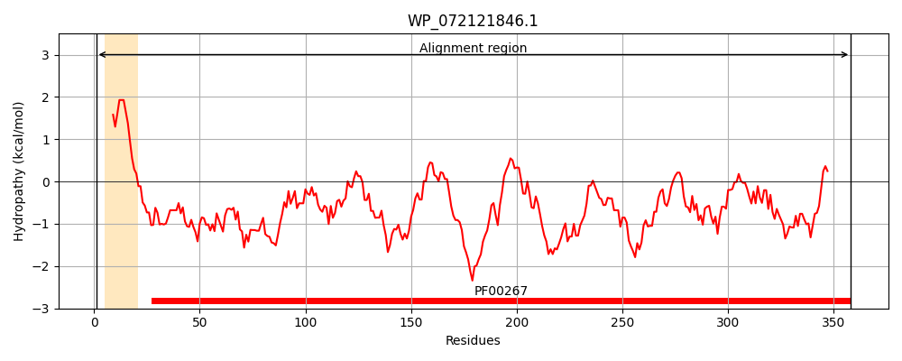
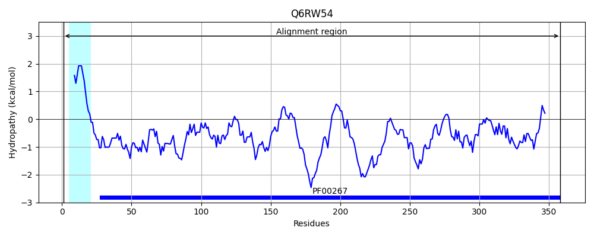
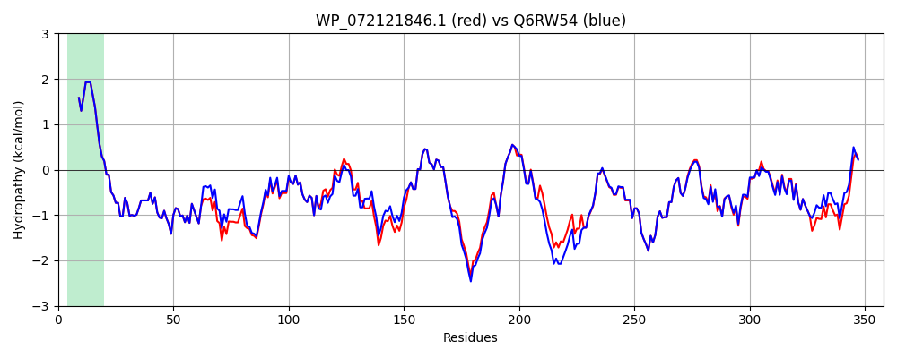

Hit Accession: Q6RW54
Hit TCID: 1.B.1.1.12
Hit Description: gnl|BL_ORD_ID|15038 gnl|TC-DB|Q6RW54|1.B.1.1.12 Outer membrane porin protein OS=Enterobacter aerogenes GN=omp35 PE=4 SV=1
Mach Len: 358
e:0.000000
Query TMS Count : 1
Hit TMS Count: 1
TMS-Overlap Score: 0.850000
Predicted Substrates:CHEBI:10427;beta-lactam antibiotic, CHEBI:3538;cephalosporin, CHEBI:5879;imipenem
BLAST Alignment:
Score: 1828 , Bit scores: 708 bits, E-value: 0.0e+00, Alignment length: 358, Percentage identity: 94
Query: 1 MKRNILAVVIPALLVAGAANAAEIYNKNGNKLDFYGKMVGEHVWTTNGDTSSDDTTYARIGLKGETQINDQLTGYGQWEYNMDASNVEGSQPTKTRLAFAGLKAGEYGSFDYGRNYGAIYDVEAATDMLVEWGGDGWNYTDNYMTGRTNGVATYRNSDFFGLVDGLSFALQYQGKNDHDRAVRKQNGDGFSTAATYAFDNGIALSAGYSGSNRSVDQKADGNGDKAEAWATSAKYDANNVYAAVMYSQTYNMTPEEDNHFAGKTQNFEAVVQYQFDFGLRPSIGYVQTKGKDLQSRAGFSGGDADLVKYIEVGTWYYFNKNMNVYAAYKFNQLDDNDYTKAAGVATDDQAAVGIVYQF 358
MKRNILAVVIPALLVAGAANAAEIYNKNGNKLDFYGKMVGEHVWTTNGDTSSDDTTYARIGLKGETQINDQL GYGQWEYNMDASNVEGSQ TKTRLAFAGLKAGEYGSFDYGRNYGAIYDVE+ATDMLVEWGGDGWNYTDN+MTGRTNGVATYRNSDFFGLVDGLSFALQYQGKNDHDR++RKQNGDGFSTAATYAFDNGIALSAGY+ SNRSVDQK DGNGDKAEAWATSAKYDANN+YAAVMYSQTYNMTPEED+HFAGKTQNFEAVVQYQFDFGLRPS+GYVQTKGK+LQ+R GF GGDADLVKY+E+GTWYYFNKNMNVYAAYKFNQLDDN YT+AAGVATDDQAAVGIVYQF
Sbjct: 1 MKRNILAVVIPALLVAGAANAAEIYNKNGNKLDFYGKMVGEHVWTTNGDTSSDDTTYARIGLKGETQINDQLIGYGQWEYNMDASNVEGSQTTKTRLAFAGLKAGEYGSFDYGRNYGAIYDVESATDMLVEWGGDGWNYTDNFMTGRTNGVATYRNSDFFGLVDGLSFALQYQGKNDHDRSIRKQNGDGFSTAATYAFDNGIALSAGYANSNRSVDQKRDGNGDKAEAWATSAKYDANNIYAAVMYSQTYNMTPEEDDHFAGKTQNFEAVVQYQFDFGLRPSLGYVQTKGKNLQARGGFGGGDADLVKYVELGTWYYFNKNMNVYAAYKFNQLDDNAYTRAAGVATDDQAAVGIVYQF 358 | Protein Hydropathy Plots: |
|---|
|  |  |
Pairwise Alignment-Hydropathy Plot:
|
|---|
|  |